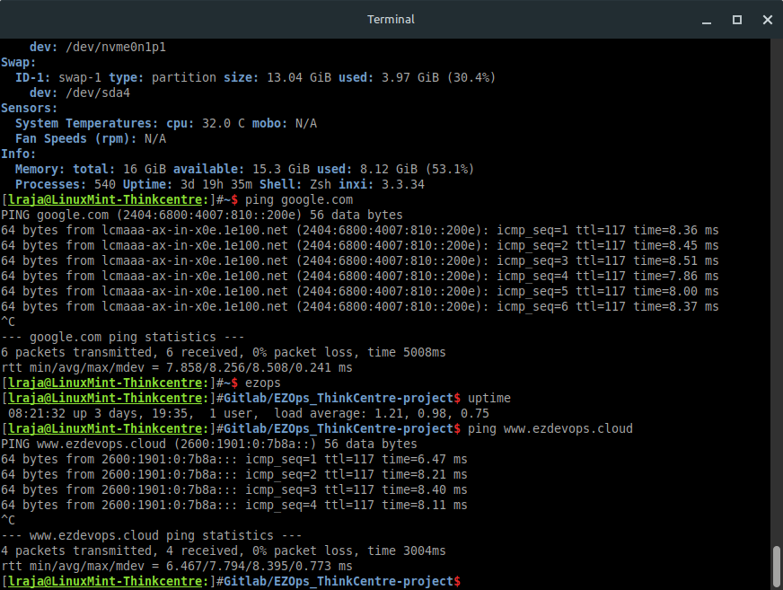

Overview of Linux -- Flavors, Shells, Terminal
← Back to Linux BasicsLinux Overview:
Linux is a free, open-source, Unix-like operating system kernel and family of OSes known for its stability, security, and flexibility, powering everything from smartphones (Android) and servers to supercomputers and desktops, offering users powerful customization and control through various "distributions" (distros) like Ubuntu or Fedora. It provides core system management (kernel) and a vast software ecosystem, making it a dominant force in cloud, web, and enterprise computing.
Linux is a family of free and open-source operating systems based on the Linux kernel. Operating systems based on Linux are known as Linux distributions or distros. Examples include Debian, Ubuntu, Fedora, CentOS, Gentoo, Arch Linux, and many others.
Linux Flavors / Distros:
"Flavors of Linux," also known as Linux Distributions (Distros) are complete operating systems built around the Linux kernel, packaging it with software, a package manager, and a desktop environment (like GNOME, KDE) for different user needs, with popular examples including Ubuntu, Fedora, Debian, Linux Mint, Arch Linux, openSUSE, and Manjaro, offering variety from user-friendly desktops to specialized server or minimal systems.
This video provides a brief overview of several popular Linux distributions:
Debian-based: Known for stability and large software repositories.
Key Aspects of Linux:
Open Source: Its source code is freely available for anyone to view, modify, and distribute, fostering massive global collaboration.
Kernel-Based: At its core is the Linux kernel, which manages hardware, while distributions bundle it with user interfaces (Desktop Environments like GNOME, KDE) and tools (like the Bash shell).
Distributions (Distros): Different versions (e.g., Ubuntu, Debian, Fedora, Arch) package the kernel and software for specific needs, from user-friendly desktops to server management.
Versatility: Runs on virtually anything, from tiny embedded devices and Android phones to vast server farms and the world's fastest supercomputers.
Security & Stability: Renowned for robust security features and reliability, making it ideal for critical infrastructure and development.
Common Uses:
Servers & Cloud: The backbone of most web servers, cloud infrastructure, and enterprise systems.
Mobile: Powers Android, the most popular smartphone OS.
Supercomputers: Dominates the world's most powerful supercomputers.
Desktop & Development: Popular among developers for its powerful command-line tools, scripting (Python, Go), containers (Docker, Kubernetes), and customization.
Prerequisites
To follow along with this guide, you will need access to a computer running a Linux-based operating system.
The Terminal
A terminal is an input and output environment typically a text-only window running a shell.
A shell is a program that exposes the computer’s operating system to a user or program. In Linux systems, the shell presented in a terminal is a command line interpreter. These are the shells availble.
A command line interface is a user interface (managed by a command line interpreter program) which processes commands to a computer program and outputs the results.
When someone refers to one of these three terms in the context of Linux, they generally mean a terminal environment where you can run commands and see the results printed out to the terminal, such as this:
Terminal window example
Becoming a Linux expert requires you to be comfortable with using a terminal. Any administrative task, including file manipulation, package installation, and user management, can be accomplished through the terminal. The terminal is interactive: you specify commands to run and the terminal outputs the results of those commands. To execute any command, you type it into the prompt and press ENTER.
